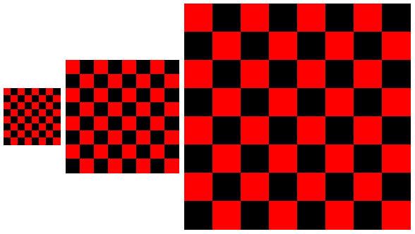
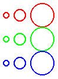
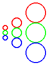

快速: 带图片的 Racket 介绍
本教程通过使用 Racket 的一个图片库对 Racket 编程语言进行了简要介绍。 即使你不打算将 Racket 用于你的艺术创作,图片库也支持有趣和有启发性的例子。 毕竟,一张图片胜过五百个 "hello world"。
按照同样的思路,我们假设你将使用 DrRacket 运行这些例子。 使用 DrRacket 是了解语言和系统感觉的最快方式,即使你最终使用 Racket 与 Emacs、vi 或其他编辑器。
1 准备就绪...
Download Racket, 安装,然后启动 DrRacket。
2 设置...
请参阅 the DrRacket documentation ,了解 DrRacket IDE 的简要概述。
然后点击 Run 按钮。你会看到文本光标移到底部文本区,也就是 interactions area .
如果你以前使用过 DrRacket,你可能需要重新设置 DrRacket, 以便在点击 Run 前通过 Language|Choose Language... 菜单项使用源代码中声明的语言。
3 行动!
当你在交互窗口的 > 后面输入表达式并点击回车键时,DrRacket 会对表达式进行评估并打印其结果。 表达式可以只是一个值,比如数字 5 或字符串 "art gallery":
> 5 5
> "art gallery" "art gallery"
一个表达式也可以是一个函数调用。 要调用一个函数,在函数名称前加一个开放的小括号,然后是函数参数的表达式,再加一个封闭的小括号,像这样:
> (circle 10)
circle 函数的结果是一个图片值,它作为表达式的结果打印出来,与数字或字符串的打印方式基本相同。 circle 的参数决定了圆的大小,单位是像素。 正如你可能猜到的,有一个 rectangle 函数需要两个参数而不是一个:
> (rectangle 10 20)
试着给 circle 错误的参数数,看看会发生什么:
> (circle 10 20) circle: arity mismatch;
the expected number of arguments does not match the given
number
expected: 1 plus optional arguments with keywords
#:border-color and #:border-width
given: 2
arguments...:
10
20
请注意,DrRacket 用粉色突出了引发错误的表达式(但本文档中没有显示粉色突出)。
除了像 circle 和 rectangle 这样的基本图片构造函数外, 还有一个 hc-append 函数可以组合图片。 当你开始在 Racket 中组成函数调用时,它看起来像这样:
> (hc-append (circle 10) (rectangle 10 20))
hc-append 这个名字中的连字符只是标识符的一部分; 它不是 hc 减去 append 。 这个函数名称以 h 开头,因为它是水平合并图片的,下一个字母是 c ,因为图片是垂直居中的。
如果你想知道还有什么其他的函数–也许是一种将图片垂直叠加并向左对齐的方法– 请将文本光标移到 hc-append 这个名字上,然后按 DrRacket 的 F1 键。 一个浏览器窗口将打开,它将给你一个指向 hc-append 文档的链接。 点击该链接,你会看到很多其他的功能。
如果你是以 HTML 形式阅读的,你也可以直接点击 hc-append 或本教程中使用的任何其他导入的标识符。
4 定义
要多次使用某个特定的圆形和矩形图片,给它们起个名字会更简单。 移回定义区(顶部区域),添加两个定义,这样定义区的完整内容就像这样了:
#lang slideshow (define c (circle 10)) (define r (rectangle 10 20))
然后再次点击 Run 。现在,你可以直接输入 c 或 r:
> r
> (hc-append c r)
> (hc-append 20 c r c)
正如你所看到的, hc-append 函数在图片参数之前接受一个可选的数字参数,而且它接受任何数量的图片参数。 当提供一个数字时,它指定了要在图片之间增加的空间量。
我们可以在交互区而不是定义区对 c 和 r 的 define 形式进行评估。 但实际上,定义区是你的程序所在的地方–它是你保存的文件–而交互区是用于瞬时的探索和调试任务。
让我们在程序中添加一个函数定义。 函数定义使用 define, 就像我们的形状定义一样,但在函数名称前有一个开放的小括号, 在匹配的封闭小括号前有函数参数的名称:
(define (square n) ; A semi-colon starts a line comment. ; The expression below is the function body. (filled-rectangle n n))
定义的语法反映了函数调用的语法:
> (square 10)
与定义可以在交互区进行评估一样,表达式也可以包含在定义区。 当程序运行时,定义区的表达式结果会显示在交互区。 从现在开始,我们将把定义和表达式的例子写在一起,你可以把它们放在你喜欢的任何一个区域。 然而,这些例子将相互建立,所以最好至少把定义放在定义区。
5 局部绑定
define 形式可以在某些地方用来创建本地绑定。 例如,它可以在一个函数体中使用:
(define (four p) (define two-p (hc-append p p)) (vc-append two-p two-p))
> (four (circle 10))
更典型的是,Racketeers 使用 let 或 let* 形式进行局部绑定。 let 的优点是它可以在任何表达式的位置使用。 而且,它可以一次绑定许多标识符,而不需要为每个标识符单独 define :
(define (checker p1 p2) (let ([p12 (hc-append p1 p2)] [p21 (hc-append p2 p1)]) (vc-append p12 p21)))
> (checker (colorize (square 10) "red") (colorize (square 10) "black"))
let 形式同时绑定了许多标识符,所以这些绑定不能相互引用。 与此相反, let* 形式允许后来的绑定使用早期的绑定:
(define (checkerboard p) (let* ([rp (colorize p "red")] [bp (colorize p "black")] [c (checker rp bp)] [c4 (four c)]) (four c4)))
> (checkerboard (square 10))

6 函数是值
与其把 circle 作为一个函数来调用,不如尝试把 circle 作为一个表达式来评估:
> circle #<procedure:circle>
也就是说,标识符 circle 被绑定到一个函数(又称 "过程")上,就像 c 被绑定到一个圆上。 与圆形图片不同的是,没有一个简单的方法可以完全打印出函数,所以 DrRacket 只是打印出 #<procedure:circle> 。
这个例子表明,函数是值,就像数字和图片一样(即使它们的打印方式不那么好)。 既然函数是值,你可以定义接受其他函数作为参数的函数:
(define (series mk) (hc-append 4 (mk 5) (mk 10) (mk 20)))
> (series circle) > (series square)
当调用一个接受函数参数的函数时,参数函数往往在其他地方不需要。 如果要通过 define 来写下这个函数,那就很麻烦了,因为你必须要编一个名字,并找到一个地方来放置函数定义。 另一种方法是使用 lambda, 它可以创建一个匿名函数:
> (series (lambda (size) (checkerboard (square size)))) 
lambda 后面的括号内的名字是函数的参数,而参数名字后面的表达式是函数体。 使用 "lambda" 而不是 "函数" 或 "过程" 是 Racket 的历史和文化的一部分。
一个函数的 define 形式实际上是一个使用 lambda 作为值的简单 define 的速记。 例如, series 定义可以写成
(define series (lambda (mk) (hc-append 4 (mk 5) (mk 10) (mk 20))))
大多数 Racketeers 喜欢使用 define 的速记函数形式,而不是扩展到 lambda 。
7 词汇范围
Racket 是一种词法范围的语言,这意味着只要一个标识符被用作表达式,表达式的文本环境中的东西就决定了标识符的绑定。 这个规则适用于 lambda 主体中的标识符,也适用于其他地方。
在下面的 rgb-series 函数中, 每个 lambda 形式中的 mk 的使用都是指 rgb-series 的参数,因为那是文本范围内的绑定:
(define (rgb-series mk) (vc-append (series (lambda (sz) (colorize (mk sz) "red"))) (series (lambda (sz) (colorize (mk sz) "green"))) (series (lambda (sz) (colorize (mk sz) "blue")))))
> (rgb-series circle) 
> (rgb-series square)
这里是另一个例子, rgb-maker 接收一个函数并返回一个新的函数,这个新的函数记住并使用原来的函数。
(define (rgb-maker mk) (lambda (sz) (vc-append (colorize (mk sz) "red") (colorize (mk sz) "green") (colorize (mk sz) "blue"))))
> (series (rgb-maker circle)) 
> (series (rgb-maker square))
请注意,与使用 rgb-maker 相比,通过 rgb-series 合成的函数在图片中产生了不同的对象排列。
8 列表
Racket 继承了 Lisp 语言的大部分风格,Lisp 的名字最初代表 "LISt Processor",而列表仍然是 Racket 的重要组成部分。
list 函数接受任意数量的参数,并返回一个包含给定值的列表:
> (list "red" "green" "blue") '("red" "green" "blue")
> (list (circle 10) (square 10)) '(

)
正如你所看到的,一个列表打印成一个单引号,然后用一对小括号包住列表元素的打印形式。 这里有混淆的余地,因为小括号既用于表达式,如 (circle 10), 也用于打印结果,如 '("red" "green" "blue") 。 引号是关键的区别, 正如 discussed elsewhere 。 为了帮助强调这个区别,在文档和 DrRacket 中,结果括号是用蓝色打印的,与表达式括号不同。
如果你有一个列表,那么你最终会想对每个元素做一些事情。 map 函数接收一个列表和一个应用于列表中每个元素的函数;它返回一个新的列表以组合函数的结果:
(define (rainbow p) (map (lambda (color) (colorize p color)) (list "red" "orange" "yellow" "green" "blue" "purple")))
> (rainbow (square 5)) '(


)
另一个适用于列表的函数是 apply 。 和 map 一样,它接收一个函数和一个列表,但是给 apply 的函数应该一次性接收所有的参数, 而不是每个参数。 apply 函数对那些接受任意数量参数的函数特别有用,比如 vc-append:
> (apply vc-append (rainbow (square 5)))
请注意, (vc-append (rainbow (square 5))) 不会起作用, 因为 vc-append 不想要一个列表作为参数;它想要一个图片作为参数,而且它愿意接受任何数量的参数。 apply 函数在需要许多参数的函数和作为单个值的这些参数的列表之间架起了一座桥梁。
9 模块
由于你在定义窗口中的程序以
你放在定义窗口中的所有代码都在一个模块中。 此外,该模块最初从 slideshow 指定的模块中导入了所有东西, 它导出了图片制作函数以及更常用的函数,如 list 和 map 。
要导入额外的库,请使用 require 形式。 例如,库 pict/flash 提供了一个 filled-flash 函数:
(require pict/flash)
> (filled-flash 40 30)
模块以不同的方式命名和分发:
一些模块被打包在 Racket 发行版中,或者以其他方式安装到一个层次的 collections 中。 例如,模块名称 pict/flash 意味着 “在文件 "flash.rkt" 中实现的模块, 该文件位于 "pict" 集合中。” 当一个模块名称不包括斜线时,那么它指的是 "main.rkt" 文件。
一些模块的集合是以 packages 的形式发布的。 包可以用 DrRacket 的 File 菜单中的 Install Package... 菜单项来安装, 也可以用 raco pkg 命令行工具来安装。 例如,安装 "avl" 包可以使用 avl 模块。
包可以在 https://pkgs.racket-lang.org/,也可以直接从 Git 仓库、网站、文件或目录中安装。 关于包的更多信息,请参见 Racket 中的包管理 。
要保存你的定义,请使用 DrRacket 的 Save Definitions 菜单项。
有些模块是相对于其他模块存在的,不一定属于任何特定的集合或包。 例如,在 DrRacket 中,如果你把到目前为止的定义保存在 "quick.rkt" 文件中,并添加一行(provide rainbow square)
然后你可以在 DrRacket 中打开一个新的标签或窗口, 在与 "quick.rkt" 相同的目录中输入新程序 "use.rkt" :
#lang racket (require "quick.rkt") (rainbow (square 5)) 而当你运行 "use.rkt" 时,输出的是一个彩虹般的方块列表。 请注意, "use.rkt" 是用初始的 import racket 编写的, 它本身不提供任何制图函数,但提供了 require 和函数调用语法。
Racketeers 通常把新程序和库写成模块,通过相对路径和基于集合的路径相互导入。 当以这种方式开发的程序或库对其他人有用时,它可以被注册为一个包,特别是如果该实现被托管在 Git 仓库中。
10 宏
这里有另一个库可以尝试:
(require slideshow/code)
> (code (circle 10))
结果是一张图片,而不是一个圆圈,如果把它作为一个表达式,会产生一个圆圈的代码。 换句话说, code 不是一个函数,而是一个用于创建图片的新的语法形式; 带有 code 的开括号之间的位子不是一个表达式,而是由 code 语法形式操纵的。
这有助于解释我们在上一节中说 racket 提供 require 和函数调用语法的意思。 库并不局限于输出值,如函数;它们也可以定义新的语法形式。 从这个意义上说,Racket 根本就不是一种语言;它更像是一个关于如何构造语言的想法,以便你可以扩展它或创造全新的语言。
引入新的语法形式的一种方法是通过 syntax-rules 的 define-syntax :
(define-syntax pict+code (syntax-rules () [(pict+code expr) (hc-append 10 expr (code expr))]))
> (pict+code (circle 10))
这种定义是一个宏。 (pict+code expr) 部分是宏的使用模式; 程序中该模式的实例被相应模板的实例所取代, 即 (hc-append 10 expr (code expr)) 。 特别是, (pict+code (circle 10)) 与 (circle 10) 作为 expr 的模式相匹配, 所以它被替换为 (hc-append 10 (circle 10) (code (circle 10))) 。
当然,这种句法扩展是双向的:发明一种新的语言可以使你更容易说出你想要的东西,但对其他人来说却更难理解。 碰巧的是,Racket 的开发者们不断地在做讲座和写论文, 其中涉及到 Racket 的代码,对于从事这些产品的人来说,了解 code 是值得的。
事实上,你可能想看一看 source of this document 。 你会看到它是以 #lang 开头的,但除此之外看起来并不像 Racket; 尽管如此,我们还是通过将其源码作为 Racket 程序运行来构建这份文档。 我们必须使用比 syntax-rules 更多的东西来扩展 Racket 的语法, 以便编写文档,但 Racket 的语法扩展可以让你走得更远。
11 对象
对象系统是另一个值得 Racket 用户学习和使用的复杂语言扩展的例子。 对象有时比函数更好,即使你有 lambda, 而且对象对图形用户界面的效果特别好。 Racket 的图形用户界面和图形系统的 API 是用对象和类来表达的。
类系统本身是由 racket/class 库实现的, 而 racket/gui/base 库提供了 GUI 和绘图类。按照惯例,这些类的名字以 % 结尾:
(require racket/class racket/gui/base) (define f (new frame% [label "My Art"] [width 300] [height 300] [alignment '(center center)]))
> (send f show #t)
new 表单创建了一个类的实例,其中初始化参数如 label 和 width 是由名字提供的。 send 表单调用对象的一个方法,比如 show, 参数在方法名后面; 本例中的参数 #t 是布尔常数 “true” 。
用 slideshow 生成的图片封装了一个函数, 该函数使用图形工具箱的绘图命令将图片渲染到一个绘图环境中,例如一个框架中的画布。 来自 slideshow 的 make-pict-drawer 函数暴露了图片的绘制功能。 我们可以在 canvas-painting 回调中使用 make-pict-drawer 来将图片绘制到 canvas 中:
(define (add-drawing p) (let ([drawer (make-pict-drawer p)]) (new canvas% [parent f] [style '(border)] [paint-callback (lambda (self dc) (drawer dc 0 0))])))
> (add-drawing (pict+code (circle 10))) #(struct:object:canvas% ...)
> (add-drawing (colorize (filled-flash 50 30) "yellow")) #(struct:object:canvas% ...)
![[image]](img2.png)
每个画布都会被拉伸以填充画框的相等部分,因为画框默认就是这样管理它的孩子的。
12 何去何从
对 Racket 的介绍有意避开了许多介绍和区分 Lisp 或 Scheme 的传统方式:前缀算术符号、符号、引号和准引号列表、 eval, 第一类延续,以及所有语法实际上只是伪装的 lambda 的想法。 虽然这些都是 Racket 的一部分,但它们并不是 Racket 日常编程的主要成分。
相反,Racket 程序员通常使用函数、记录、对象、异常、正则表达式、模块和线程进行编程。 也就是说,Racket 并不是一种 "极简" 的语言–这也是 Scheme 经常被描述的方式–它提供了一种丰富的语言,拥有大量的库和工具。
如果你是编程新手,或者你有耐心看完一本教科书,我们推荐你阅读 How to Design Programs 。 如果你已经读过了,或者你想看看这本书会带你到什么地方去,那么请看 Continue: Web Applications in Racket 。
对于有经验的程序员来说,要想从面向系统的角度而不是图片来继续游览 Racket, 你的下一站是 更多: 用 Racket 进行系统编程 。
如果想开始深入了解完整的 Racket 语言和工具, 请继续阅读 Racket 指南 。